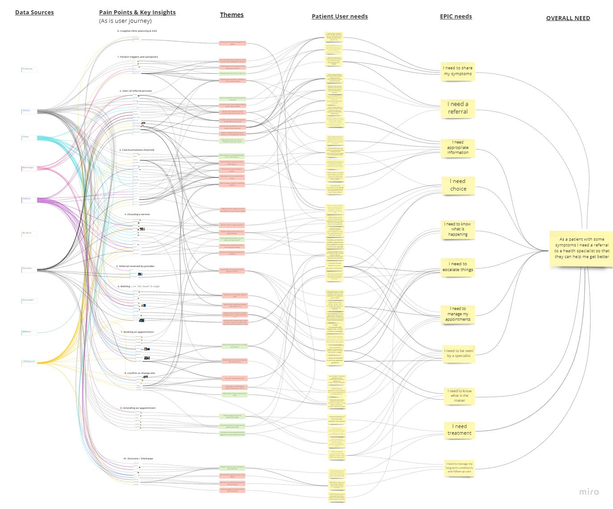

Hi I’m Tom — i’ve been working at NHS Digital as a User Researcher on the NHS referrals transformation project since 2015.
In January this year I joined the ‘NHS Booking, Referral and Appointment Management’ Discovery project in Leeds to complete an holistic review of how the NHS manages approximately 500 million patient appointments and 20 million new referrals each year.
These are a few of my thoughts from the last few days, but the discovery project will conclude in the next few weeks… keep an eye out for the project findings, conclusions, recommendations and show and tell!!
“Having to wait 6 months to see a breathing specialist is far too long, I could be dead by the time the appointment comes around!!” Patient feedback
I did my bit
To consider challenging feedback from patients we can “zoom out a bit” and consider the users and actors involved in the whole journey…
In the scenario below every user thinks they are doing their “bit” in the “process”. Everyone is working to the best of their ability, given their landscape, limited time and resources they have. For example:
National appointment booking line — “There are no slots at the service. We can send a request for the service to arrange an appointment, or you can call back tomorrow.”
Hospital booking / call centre — “You are already on the waiting list for an appointment. We can’t see you any quicker. You can try again tomorrow for a cancellation?”
Hospital clinical triage — “We’ve reviewed your referral letter. It is not urgent we’ve got an 18 week target for Referral to Treatment. It has only been five weeks so we’ve got time… our other patients need to go first.”
Pharmacy — “We put you on a highest dose of the recomended prescription. We could try a different mix but those meds are sub-optimal.”
GP — “I’ve referred you to the right speciality — there are no other local choices.”
Commissioner — “We need to cut the costs in the area so we block commissioned. We don’t want to have local restrictions but we must optimise local resourcing within our budget. You can go to another service but we tell GPs to use this service first.”
Private providers — “We have some capacity… but if you apply for funding it’s unlikely to get approved. Or you could pay.”
NHS 111 — “We’ve assessed you but you need to go back to your GP and pharmacy as it’s a long term condition — you’re already in their system. If your symptoms suggest it’s an emergency we would arrange an ambulance.”
System supplier — “Patients can always raise a complaint… but we provide IT and that is working fine. We don’t provide direct healthcare. If a patient thinks there is a bug they contact the service desk. If we confirm a bug we fix it under the Service Level Agreement.”
Online survey — “This is an automated monitoring service we don’t respond to individual comments.”
Research team — “These patient comments are upsetting, yes. The patient is angry too. Yet their situation is the same as thousands of other patients waiting for appointments. We see comments like this all the time and if their comments suggest a specific risk of harm we send it to a clinician.”
The time that is needed say “I’m sorry, I can’t help, please follow this process” is small to each actor. Allthe actors get paid for their part in the agreed process, and they also get a little drop of happiness by “nudging the patient along in the right direction”.
The consequences of this process for the patient is a complete timesink navigating various silos, it can make patients lose trust in the NHS.
If a patient condition starts to deteriorate, how will the patient know who to reach out to? It may feel as though no one is managing their care and there is a real risk they fall through gaps in provision.
If a patient deteriorates and they need an ambulance or they end up at Accident & Emergency… the fact they have a referral and have booked an appointment with a specialist doesn’t matter.
Starting with patient needs

“ I have been waiting a long time for my appointment to come through… six months I have been waiting to be seen… I have been suffering there has to be a quicker way for us to be seen and for doctors to treat us… as more damage could be done… because of the length of time its taken its made me so depressed I’ve not been able to walk properly and suffer in pain… its taken my physio doctor to write to you again to find out why I have not received my appointment… for you to now send it.” Patient feedback
From analysing the referrals and booking journey end-to-end we now understand the pain-points and patient needs in a lot of detail.
For example, we could tackle some gaps in provision if patients always knew:
- who is managing their referral,
- what happens next and when, and,
- what to do if their symptoms get worse.

Challenges to transformation
There are dozens of big challenges for transforming the NHS referrals and booking process. For example:
- Putting patient needs at the centre of their care journey,
- Culture, collaboration, incentives,
- Standardising referral patterns and improving clinical triage,
- Addressing service-wide and policy-level problems like those above will be needed to help transform patient outcomes and create efficiency within the process.
Designing the car not “faster horses”
The underlying fabric of patient needs is very consistent over time. Yet the way the NHS is organised and the needs of the business continue to evolve each year.
We have identified the main problems to solve and are building new hypotheses to design against (How Might We statements).
The service design process the team follow ensures we meet the both the current and future needs of users and the business, e.g.
How might we improve the triage process by allowing referred patients to join a specialist consultation from home?
How might we ensure everyone who is part of a patient’s care can see the plan and has the same information about the referral?
How might we enable the professionals involved in a referral to discuss the patient without needing to write ‘letters’?
How might we prevent patients ending up at A&E by providing a simple route to escalate if their long-term condition is deteriorating?
TL;DR
There are so many opportunities for improvement within the referrals and bookings health domain.
We need headspace to digest the discovery and consider what “the ideal” end-to-end referral and booking experience might look like. We should design some new solutions that meet patient user needs and test them with real users.
If we place trust in the user-centred design process, follow the (NHS Service Standard), then positive transformation won’t be far away!